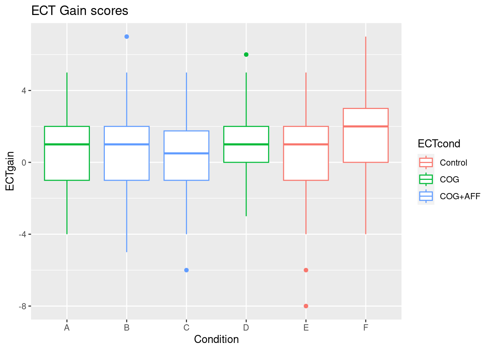
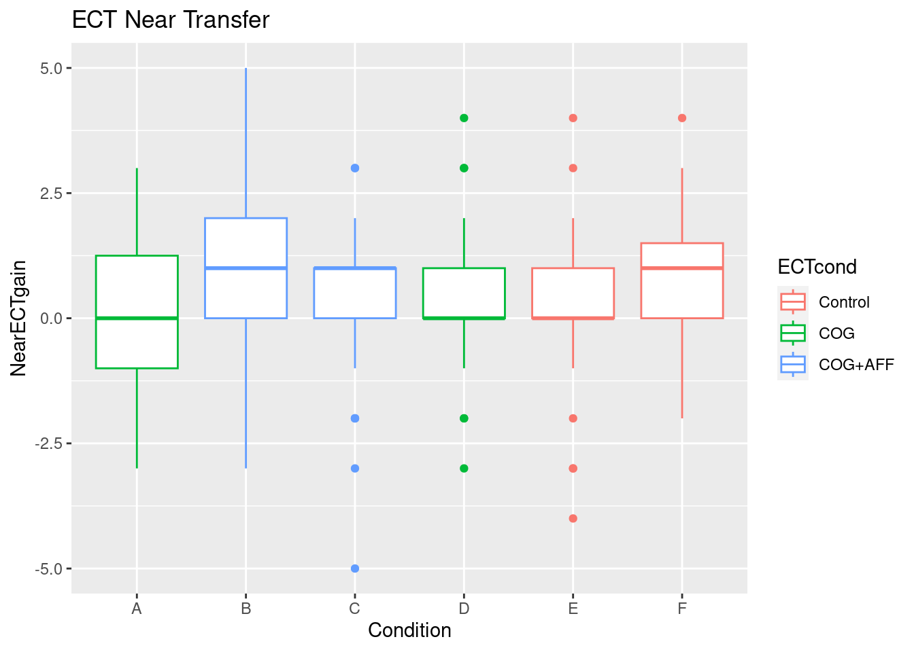
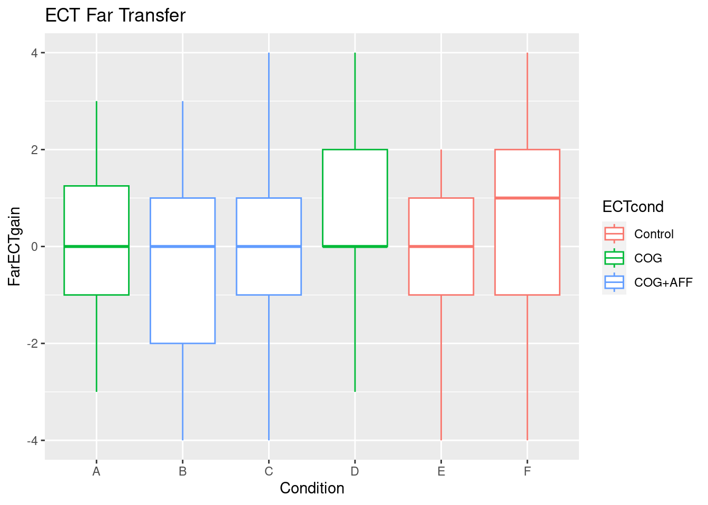
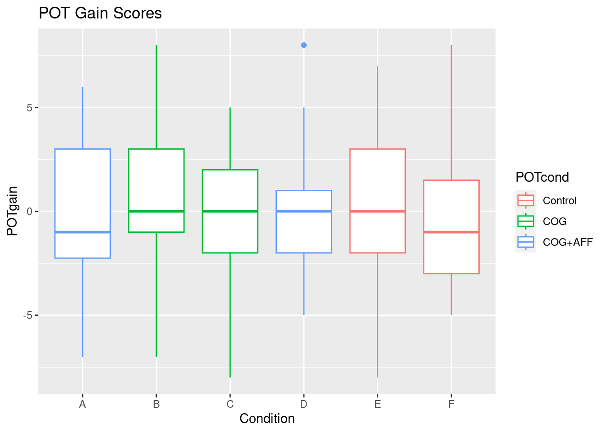
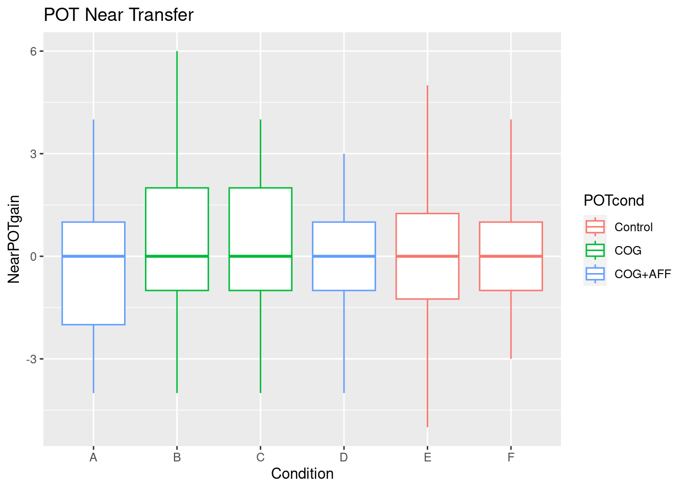
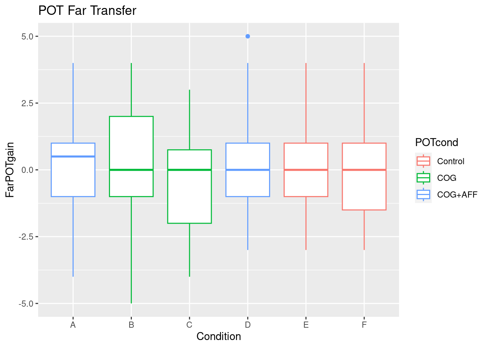
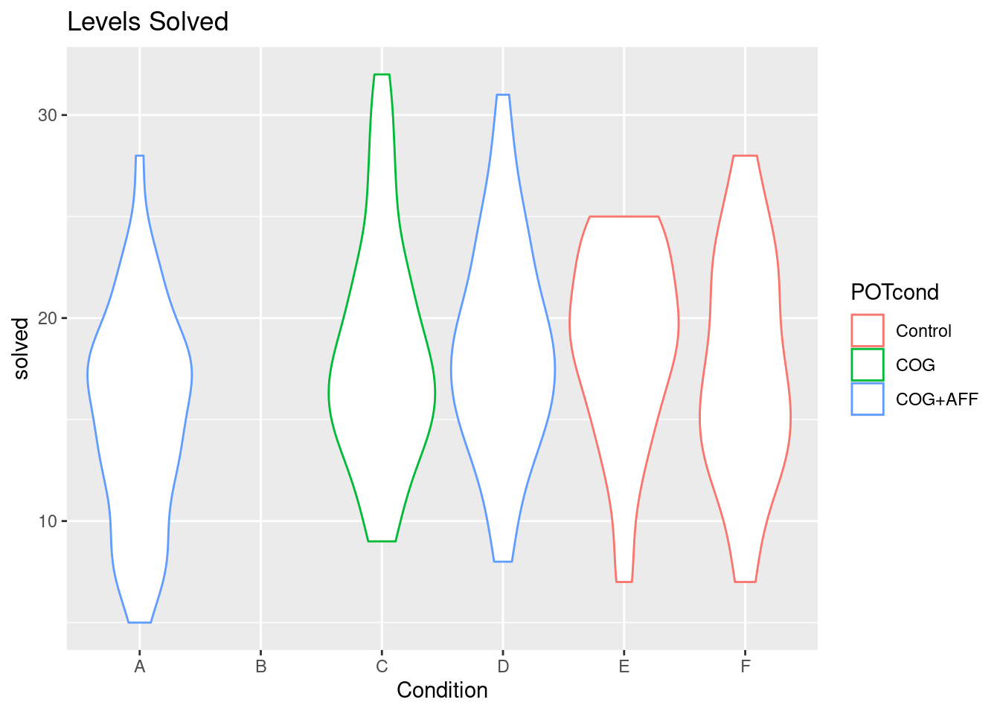

Code
library(tidyverse)
library(lme4)
source("Data/AllMetadata.R")
PPIESFall2022 <-
read_csv("Data/PPIESFall2022Full.csv",
col_types=colAll)
library(tidyverse)
library(lme4)
source("Data/AllMetadata.R")
PPIESFall2022 <-
read_csv("Data/PPIESFall2022Full.csv",
col_types=colAll)Note that treatments differ for the ECT and POT subtests, so need to analyze them separately.
Treatments are marked by the CognitiveSupports and AffectiveECT or AffectivePOT variables.
This code shows counts in each condition/ECT Treatment
PPIESFall2022 %>%
mutate(ECTcond=factor(PPIESFall2022$CognitiveSupports+
PPIESFall2022$AffectiveECT,0:2,
c("Control","COG","COG+AFF"))) %>%
mutate(POTcond=factor(PPIESFall2022$CognitiveSupports+
PPIESFall2022$AffectivePOT,0:2,
c("Control","COG","COG+AFF"))) ->
PPIESFall2022
table(PPIESFall2022$Condition,PPIESFall2022$ECTcond)
Control COG COG+AFF
A 0 44 0
B 0 0 41
C 0 0 42
D 0 46 0
E 36 0 0
F 35 0 0Condition/POTTreatment
table(PPIESFall2022$Condition,PPIESFall2022$POTcond)
Control COG COG+AFF
A 0 0 44
B 0 41 0
C 0 42 0
D 0 0 46
E 36 0 0
F 35 0 0PPIESFall2022 %>%
mutate(NearECTgain=NearECTpost-NearECT,
FarECTgain=FarECTpost-FarECT,
ECTgain=ECTpost-ECT,
NearPOTgain=NearPOTpost-NearPOT,
FarPOTgain=FarPOTpost-FarPOT,
POTgain=POTpost-POT) ->
PPIESFall2022n.POTgain <- sum(!is.na(PPIESFall2022$POTgain))
m.POTgain <- mean(PPIESFall2022$POTgain,na.rm=TRUE)
s.POTgain <- sd(PPIESFall2022$POTgain,na.rm=TRUE)
t.POTgain <- m.POTgain/s.POTgain/sqrt(n.POTgain)
cat("Average POT gain ",round(m.POTgain,2),"(",round(s.POTgain,3),"); t(",
n.POTgain,")=",t.POTgain,"d= ",round(m.POTgain/s.POTgain,2),"\n")Average POT gain -0.01 ( 2.991 ); t( 242 )= -0.0001776204 d= 0 n.ECTgain <- sum(!is.na(PPIESFall2022$ECTgain))
m.ECTgain <- mean(PPIESFall2022$ECTgain,na.rm=TRUE)
s.ECTgain <- sd(PPIESFall2022$ECTgain,na.rm=TRUE)
t.ECTgain <- m.ECTgain/s.ECTgain/sqrt(n.ECTgain)
cat("Average ECT gain ",round(m.ECTgain,2),"(",round(s.ECTgain,3),"); t(",
n.ECTgain,")=",t.ECTgain,"d= ",round(m.ECTgain/s.ECTgain,2),"\n")Average ECT gain 0.69 ( 2.414 ); t( 243 )= 0.0182629 d= 0.28 ggplot(PPIESFall2022,aes(x=Condition,y=ECTgain,color=ECTcond)) +
geom_boxplot() +labs(title="ECT Gain scores")
ggplot(PPIESFall2022,aes(x=Condition,y=NearECTgain,color=ECTcond)) +
geom_boxplot() + labs(title="ECT Near Transfer")
ggplot(PPIESFall2022,aes(x=Condition,y=FarECTgain,color=ECTcond)) +
geom_boxplot() + labs(title="ECT Far Transfer")
ggplot(PPIESFall2022,aes(x=Condition,y=POTgain,color=POTcond)) +
geom_boxplot() + labs(title="POT Gain Scores")
ggplot(PPIESFall2022,aes(x=Condition,y=NearPOTgain,color=POTcond)) +
geom_boxplot() + labs(title="POT Near Transfer")
ggplot(PPIESFall2022,aes(x=Condition,y=FarPOTgain,color=POTcond)) +
geom_boxplot() + labs(title="POT Far Transfer")
ECTlm <- lm(ECTpost ~ ECT+CognitiveSupports+AffectiveECT,data=PPIESFall2022,
na.action=na.omit)
ECTct <- cbind(coef(summary(ECTlm)),d=coef(ECTlm)/summary(ECTlm)$sigma)
round(ECTct,3) Estimate Std. Error t value Pr(>|t|) d
(Intercept) 4.894 0.601 8.144 0.000 2.244
ECT 0.575 0.057 10.014 0.000 0.263
CognitiveSupportsTRUE -0.049 0.347 -0.141 0.888 -0.022
AffectiveECTTRUE -0.574 0.333 -1.723 0.086 -0.263cat("R-squared: ",round(summary(ECTlm)$r.squared, 3),
"; d.f.=", summary(ECTlm)$df[2],"\n")R-squared: 0.31 ; d.f.= 239 ECT is pretest. Affective supports are significant, but in the wrong direction.
Add classroom as a random effect, as there is a considerable age, and scientific and mathematical sophistication differences.
ECTlmer <- lmer(ECTpost ~ ECT+CognitiveSupports+AffectiveECT + (1|Class),
data=PPIESFall2022, na.action=na.omit)
summary(ECTlmer)Linear mixed model fit by REML ['lmerMod']
Formula: ECTpost ~ ECT + CognitiveSupports + AffectiveECT + (1 | Class)
Data: PPIESFall2022
REML criterion at convergence: 1070.9
Scaled residuals:
Min 1Q Median 3Q Max
-3.9923 -0.6111 0.0800 0.6840 2.4150
Random effects:
Groups Name Variance Std.Dev.
Class (Intercept) 0.0985 0.3139
Residual 4.6633 2.1595
Number of obs: 243, groups: Class, 19
Fixed effects:
Estimate Std. Error t value
(Intercept) 4.95841 0.60530 8.192
ECT 0.56596 0.05772 9.805
CognitiveSupportsTRUE -0.02661 0.34574 -0.077
AffectiveECTTRUE -0.59284 0.33251 -1.783
Correlation of Fixed Effects:
(Intr) ECT CSTRUE
ECT -0.897
CgntvSpTRUE -0.313 -0.005
AffcECTTRUE -0.047 0.053 -0.464ECTcter <- cbind(coef(summary(ECTlmer)),d=fixef(ECTlmer)/summary(ECTlmer)$sigma)
round(ECTcter,3) Estimate Std. Error t value d
(Intercept) 4.958 0.605 8.192 2.296
ECT 0.566 0.058 9.805 0.262
CognitiveSupportsTRUE -0.027 0.346 -0.077 -0.012
AffectiveECTTRUE -0.593 0.333 -1.783 -0.275POTlm <- lm(POTpost ~ POT+CognitiveSupports+AffectivePOT,data=PPIESFall2022,
na.action=na.omit)
POTct <- cbind(coef(summary(POTlm)),d=coef(POTlm)/summary(POTlm)$sigma)
round(POTct,3) Estimate Std. Error t value Pr(>|t|) d
(Intercept) 7.725 0.545 14.177 0.000 3.715
POT -0.052 0.065 -0.796 0.427 -0.025
CognitiveSupportsTRUE 0.073 0.336 0.217 0.829 0.035
AffectivePOTTRUE -0.128 0.318 -0.403 0.688 -0.062cat("R-squared: ",round(summary(POTlm)$r.squared, 3),
"; d.f.=", summary(POTlm)$df[2],"\n")R-squared: 0.003 ; d.f.= 238 No significant effects of supports. ### Random Effects
Add classroom as a random effect, as there is a considerable age, and scientific and mathematical sophistication differences.
POTlmer <- lmer(POTpost ~ POT+CognitiveSupports+AffectivePOT + (1|Class),
data=PPIESFall2022, na.action=na.omit)
summary(POTlmer)Linear mixed model fit by REML ['lmerMod']
Formula: POTpost ~ POT + CognitiveSupports + AffectivePOT + (1 | Class)
Data: PPIESFall2022
REML criterion at convergence: 1043.5
Scaled residuals:
Min 1Q Median 3Q Max
-2.6516 -0.6436 0.1717 0.7594 2.3040
Random effects:
Groups Name Variance Std.Dev.
Class (Intercept) 0.08439 0.2905
Residual 4.24447 2.0602
Number of obs: 242, groups: Class, 19
Fixed effects:
Estimate Std. Error t value
(Intercept) 7.69608 0.54954 14.005
POT -0.04444 0.06566 -0.677
CognitiveSupportsTRUE 0.05497 0.33491 0.164
AffectivePOTTRUE -0.12557 0.31777 -0.395
Correlation of Fixed Effects:
(Intr) POT CSTRUE
POT -0.886
CgntvSpTRUE -0.361 0.038
AffcPOTTRUE 0.031 -0.036 -0.488POTcter <- cbind(coef(summary(POTlmer)),d=fixef(POTlmer)/summary(POTlmer)$sigma)
round(POTcter,3) Estimate Std. Error t value d
(Intercept) 7.696 0.550 14.005 3.736
POT -0.044 0.066 -0.677 -0.022
CognitiveSupportsTRUE 0.055 0.335 0.164 0.027
AffectivePOTTRUE -0.126 0.318 -0.395 -0.061General energy and excitement was high, so probably no need for affective supports.
Students worked in tables of up to 4 students. Considerable talk with students.
Students were supposed to wear earphones to hear audio on video clips, but compliance was low.
Students were frequently observed looking around the room and talking to their peers while support videos were playing.
table(PPIESFall2022$Condition)
A B C D E F
44 41 42 46 36 35 PPIESFall2022 %>% mutate(solved=silver.max+gold.max) -> PPIESFall2022ggplot(PPIESFall2022,aes(x=Condition,y=solved,color=POTcond)) +
geom_violin() + labs(title="Levels Solved")Warning: Removed 41 rows containing non-finite values (`stat_ydensity()`).
table(PPIESFall2022$Condition,PPIESFall2022$solved)
5 7 8 9 10 11 12 13 14 15 16 17 18 19 20 21 22 23 24 25 26 27 28 29 30 31
A 1 2 4 0 3 0 3 3 3 3 1 5 6 2 1 2 2 1 1 0 0 0 1 0 0 0
B 0 0 0 0 0 0 0 0 0 0 0 0 0 0 0 0 0 0 0 0 0 0 0 0 0 0
C 0 0 0 1 2 1 1 2 3 5 2 5 3 3 1 2 3 1 1 0 1 2 0 0 2 0
D 0 0 1 1 1 0 3 1 2 5 3 3 5 3 4 2 1 3 2 1 2 0 1 1 0 1
E 0 1 1 0 0 1 1 1 1 3 1 2 3 4 3 3 2 2 3 4 0 0 0 0 0 0
F 0 1 1 1 0 0 3 3 3 1 4 2 2 1 2 1 2 3 2 0 1 1 1 0 0 0
32
A 0
B 0
C 1
D 0
E 0
F 0Something screwy is happening with condition B. I need to look more closely.